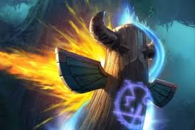
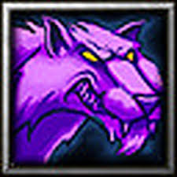

Thrall – Far Seer Abilities
Warcraft III: The Frozen Throne
Home
About
Abilities
Allies
Contact
Chain Lightning
Hurls a bolt of lightning that bounces between enemy units, dealing damage with each jump.
Hurls a bolt of lightning that bounces between enemy units, dealing damage with each jump.

Far Sight
Reveals a distant area of the map, allowing Thrall to scout enemy positions.
Reveals a distant area of the map, allowing Thrall to scout enemy positions.

Feral Spirit
Summons Spirit Wolves to aid Thrall in combat.
Summons Spirit Wolves to aid Thrall in combat.
 Earthquake (Ultimate)
Earthquake (Ultimate)Causes the ground to shake violently, damaging buildings and slowing enemies.